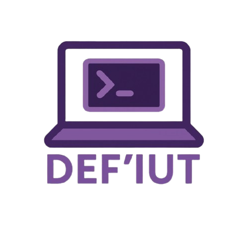

BUT 1 · Fondamentaux
Programmation Java et Python, algorithmique, SQL, conception objet, interfaces Java et premières architectures réseaux.
Étudiant en BUT Informatique · Parcours déploiement
Je suis Dorian Philippart. Je développe des applications web et des API, puis je les déploie dans des environnements sécurisés, conteneurisés et automatisés.
Mon parcours en BUT Informatique à l’IUT de Vannes m’a amené du développement objet et des bases de données vers les architectures web, les API REST et les microservices.
En alternance, j’ai mené deux missions de développement avec une forte autonomie : compréhension du besoin, exploration technique, réalisation et restitution. J’aime aussi les jeux vidéo, voyager et les animaux. Consulter l’analyse détaillée de mes compétences.
Programmation Java et Python, algorithmique, SQL, conception objet, interfaces Java et premières architectures réseaux.
React, TypeScript, Express, Spring Boot, MongoDB, Docker, CI/CD, administration Linux, sécurité, virtualisation et premières missions en alternance.
Microservices, API, réseaux segmentés, VPN, LDAP, Samba, automatisation avec Ansible et intégration continue avec Jenkins.
Traduction des demandes en besoins techniques, exploration de sujets nouveaux, développement autonome et documentation pensée pour la reprise du code.
Optimisation de traitements distants et séquentiels, DTO, recherches adaptées, cache, externalisation des secrets et gestion des droits utilisateurs.
Adaptation aux modèles de données de l’entreprise, validation du schéma avec Hibernate et restitution claire par listes, interfaces et graphiques.
Spécifications, ergonomie, architecture, bonnes pratiques et validation par tests fonctionnels, scripts et CI/CD.
DTO, cache, recherches optimisées et allègement des pages, notamment pour les traitements distants et les volumes importants.
Applications connectées aux bases et services externes, serveurs virtualisés, Linux, réseaux, conteneurs et sécurisation.
SQL, MySQL, MongoDB, hachage et salage des mots de passe, cohérence des schémas, listes et visualisations.
Formalisation des besoins, étude de faisabilité, rôles, jalons, réunions et suivi des tâches avec les issues GitLab.
Canaux de communication, répartition du travail, comptes rendus d’activité et compréhension du rôle global d’un service informatique.
Des réalisations issues de mon parcours à l’IUT, choisies pour montrer la variété de mes compétences.

Une application web de challenges destinée aux étudiants de l’IUT, avec comptes, classement, collections et défis de différents types. Le projet associe React/TypeScript à une API Express/MySQL, documentée avec Swagger et déployée par Docker et GitLab CI/CD.
Conception d’une application mobile centralisant événements, équipes et joueurs. Le projet couvre l’analyse du besoin, les diagrammes UML/BPMN, l’authentification Firebase, les favoris et l’intégration de l’API Liquipedia.

Une application de gestion des secouristes, sites et événements sportifs. L’architecture sépare interface, services métier, DAO et base SQL, avec opérations CRUD, modèle relationnel et documentation technique.
Mise en place d’architectures segmentées sous Linux avec routeur, pare-feu, LAN et DMZ. Configuration de nftables, WireGuard, Samba et LDAP, complétée par des travaux d’automatisation Ansible/Jenkins et des API conteneurisées.
Mes dépôts publics les plus récemment mis à jour.
Chargement des projets publics…
Une idée à partager ?
Une alternance, un projet ou simplement envie d’échanger autour du développement et de l’infrastructure ? Retrouvez-moi sur GitHub.